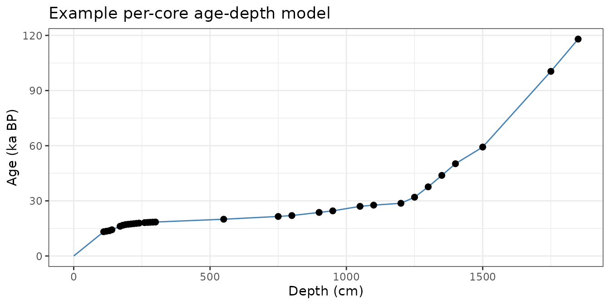
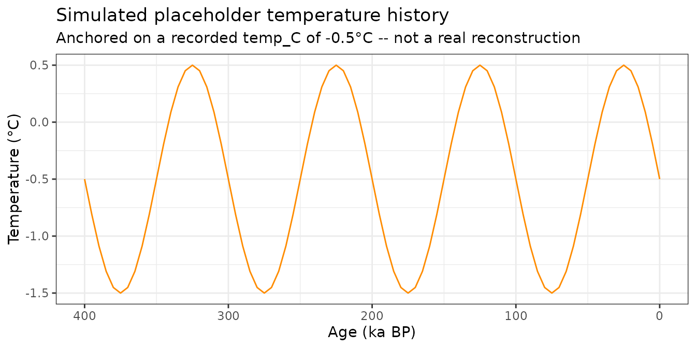
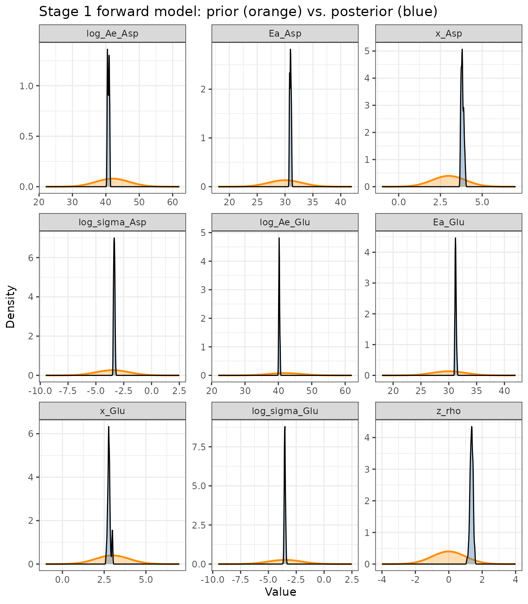
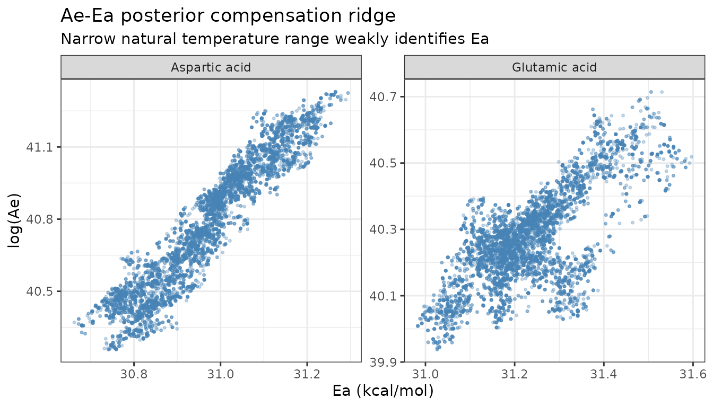
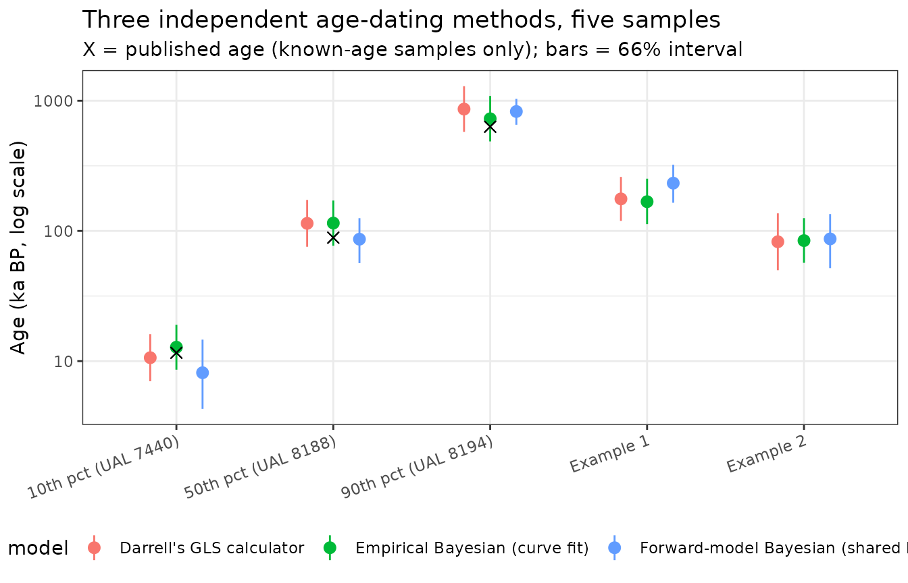
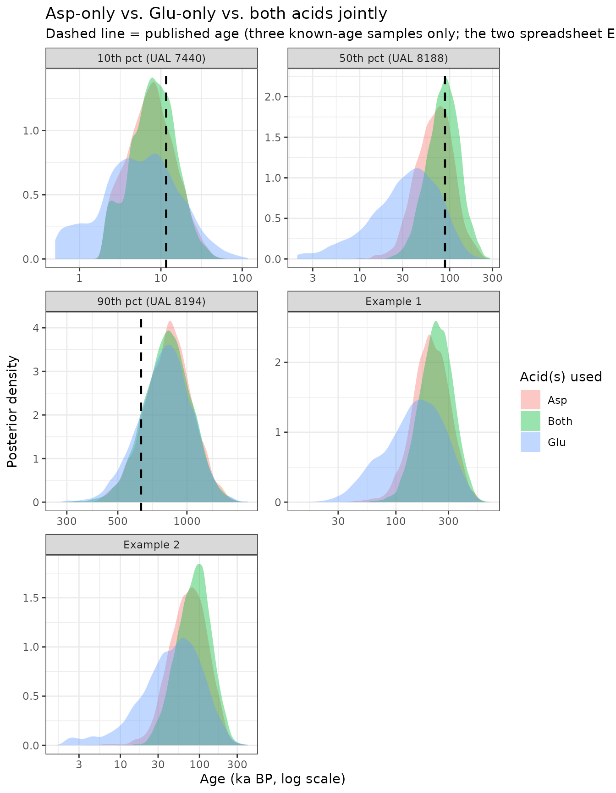
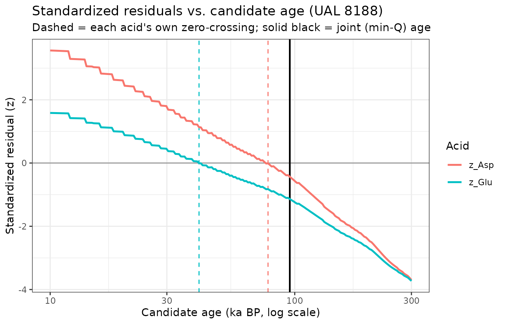
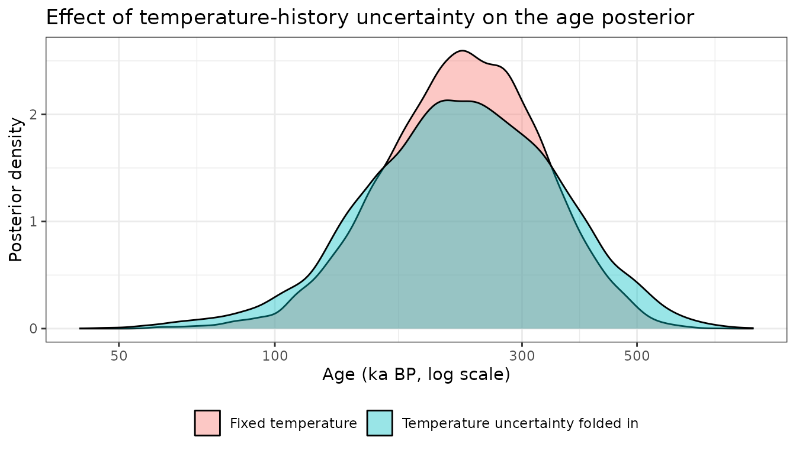

Two-Acid Age Dating: A Shared Forward Model (Asp + Glu)
Source:vignettes/two-acid-age-forward-model.Rmd
two-acid-age-forward-model.RmdOverview
vignette("two-acid-age-inversion") builds a Bayesian
two-acid age model that reproduces an in-prep Np AAR age calculator:
aspartic acid (Asp) is fit with a “time-dependent kinetics” (TDK) curve,
glutamic acid (Glu) with a “simple power-law kinetics” (SPK) curve – two
different empirical curve forms, each fit by regressing
log(age) on log(f(D/L)).
This vignette takes a different starting point: Asp and Glu
should racemize according to the same underlying chemistry –
the TDK/SPK split is a curve-fitting convenience for getting the best
empirical fit to each acid, not evidence of different reaction
mechanisms. So instead of two curve forms, this vignette fits
one shared kinetic model (the same Arrhenius + Bada
power-law model already used for isoleucine elsewhere in this package:
arrhenius(), dRacPL(),
racemize_one_depth()) to each acid independently, each
getting its own Ae (pre-exponential factor),
Ea (activation energy), and x (power-law
exponent), but evaluated through the same forward-model code
path.
Rather than a single-shot “effective temperature” calculation, D/L is
forward-simulated through the package’s actual depth-series machinery: a
real per-core age-depth model
(make_age_model()/rate_to_age_model()) and a
temperature history (not a scalar), using
racemize_one_depth() exactly as it’s used for lake-sediment
paleothermometry.
What this buys us over the curve fit: an activation
energy in real physical units (kcal/mol), directly comparable across
acids and to the isoleucine kinetics fit in
vignette("kinetics-fitting"), and a model that in principle
can use whatever temperature history is actually known for a core,
rather than assuming one fixed effective value forever.
What we don’t have (yet), and simulate as an explicit placeholder: the calibration dataset records only one representative bottom-water temperature per sample, not an actual paleotemperature reconstruction, and most cores have too few samples to build a well-resolved age-depth model. Both gaps are filled here with clearly-labeled placeholders – a synthetic mild glacial-interglacial temperature oscillation, and a straight-line age-depth model for single-sample cores – meant to be swapped for real inputs as they become available.
Parameter glossary
Model parameters accumulate quickly across the two stages below. This table collects all of them in one place for reference.
| Parameter | Stage | Meaning |
|---|---|---|
Ae |
Stage 1 | Arrhenius pre-exponential (frequency) factor, one value per acid. Sets the overall reaction rate scale. |
Ea |
Stage 1 | Arrhenius activation energy (kcal/mol), one value per acid. Controls how strongly the rate depends on temperature. |
x |
Stage 1 | Bada power-law exponent, one value per acid. Same role
as x in default_AAR_params for isoleucine:
linearizes D/L accumulation as (D/L)^x (or
atanh for the empirical TDK model in the companion
vignette). |
sigma |
Stage 1 | Residual SD of observed vs. forward-model-predicted D/L, one value per acid (D/L units, not log-age units). |
rho |
Stage 1 | Correlation between the two acids’ D/L residuals at a given calibration sample (both acids racemize under the same history, so their departures from the model trend co-vary). |
log_age |
Stage 2 | The single Stage 2 unknown: natural log of the candidate sample age (ka BP). Priors and posteriors are reported back-transformed to ka. |
temp_offset |
Stage 2 (temp. uncertainty) | Nuisance parameter (deg C) added to a sample’s recorded
temp_C to represent uncertainty in its true effective
bottom-water temperature; only used in the temperature-uncertainty
sensitivity analysis below. |
depth_cm |
Stage 2 | Depth of a sample below the sediment surface. For Stage 1 (calibration) this is a real recorded depth; for Stage 2 (a new sample of unknown age) it is an arbitrary placeholder that cancels out of the single-point age-depth model. |
dT_yr |
Both | Integration timestep (yr) used by
racemize_one_depth() to numerically accumulate D/L over the
age-depth model and simulated temperature history. |
Age-depth models and simulated temperature histories
np_path <- system.file("extdata", "np_calibration.csv", package = "AARP")
np <- read.csv(np_path)
# A handful of rows record "-" for SD (single-subsample entries with no
# replicate spread); read.csv leaves the whole column as character as a
# result, so coerce explicitly.
np$SD_Asp <- suppressWarnings(as.numeric(np$SD_Asp))
np$SD_Glu <- suppressWarnings(as.numeric(np$SD_Glu))
nrow(np)
#> [1] 128build_core_age_models() groups samples by core and
builds a real interpolated age-depth model wherever a core has two or
more dated levels (e.g. study "Kaufman et al., 2013", core
"Link 16", with four samples from 0.1 to 3.9 mbsf);
single-sample cores fall back to a straight line from the core top
through that one point.
pc <- precompute_forward_inputs(np)
# A multi-sample core
core_key <- paste(np$study[!is.na(np$temp_C)], np$core[!is.na(np$temp_C)])
multi_i <- which(core_key == names(sort(-table(core_key)))[1])
depth_seq <- seq(0, max(pc$depth_cm[multi_i]), length.out = 100)
age_seq <- pc$age_model[[multi_i[1]]]$depth_to_age(depth_seq)
ggplot(data.frame(depth_cm = depth_seq, age_ka = age_seq),
aes(x = depth_cm, y = age_ka)) +
geom_line(colour = "steelblue") +
geom_point(data = data.frame(depth_cm = pc$depth_cm[multi_i],
age_ka = np$age_ka[!is.na(np$temp_C)][multi_i]),
size = 2) +
labs(x = "Depth (cm)", y = "Age (ka BP)",
title = "Example per-core age-depth model") +
theme_bw()
simulate_temp_history() generates the placeholder
temperature history: a mild (~1°C amplitude, ~100 ka period) oscillation
around each sample’s recorded temperature, giving the depth-series time
integration a genuine history to integrate over instead of a
constant.
th <- simulate_temp_history(temp_C = -0.5, max_age_ka = 400)
ggplot(th, aes(x = age_ka, y = temp_C)) +
geom_line(colour = "darkorange") +
scale_x_reverse() +
labs(x = "Age (ka BP)", y = "Temperature (°C)",
title = "Simulated placeholder temperature history",
subtitle = "Anchored on a recorded temp_C of -0.5°C -- not a real reconstruction") +
theme_bw()
Stage 1: forward-model calibration fit
precompute_forward_inputs() builds the (depth,
age-model, temperature-history) triple for every calibration sample
once, since only the kinetic parameters
(Ae, Ea, x per acid) change
between MCMC iterations – the age models and temperature histories don’t
depend on them.
| Parameter | Prior |
|---|---|
| log(Ae_Asp), log(Ae_Glu) | Normal(42, 5) |
| Ea_Asp, Ea_Glu | Normal(30, 3) – informed |
| x_Asp, x_Glu | Normal(3, 1) |
| log(sigma_Asp), log(sigma_Glu) | Normal(log(0.03), 1.5) |
| z_rho | Normal(0, 1) |
Ea uses a deliberately informed prior:
the calibration dataset’s natural bottom-water temperatures span only
about 3.5°C, far too narrow to identify an activation energy from field
data alone (the same limitation the original study notes for the
Arrhenius/heating-experiment comparison approach). The prior is centred
in the ~25-35 kcal/mol range typical of published racemization
activation energies for calcite-hosted amino acids.
init_fwd <- c(log_Ae_Asp = 42, Ea_Asp = 30, x_Asp = 3, log_sigma_Asp = log(0.03),
log_Ae_Glu = 42, Ea_Glu = 30, x_Glu = 3, log_sigma_Glu = log(0.03),
z_rho = 0)
prop_fwd <- c(log_Ae_Asp = 0.02, Ea_Asp = 0.015, x_Asp = 0.008, log_sigma_Asp = 0.02,
log_Ae_Glu = 0.02, Ea_Glu = 0.015, x_Glu = 0.008, log_sigma_Glu = 0.02,
z_rho = 0.03)
set.seed(42)
mcmc_fwd <- run_mcmc(log_posterior_age_calibration_fwd,
init = init_fwd,
n_iter = 10000,
proposal_sd = prop_fwd,
precomputed = pc,
dT_yr = 2000)
cat("Acceptance rate:", round(mcmc_fwd$acceptance_rate * 100, 1), "%\n")
#> Acceptance rate: 33.5 %Posterior calibration constants
calib_params_fwd <- summarize_calibration_fwd(mcmc_fwd, burnin = 2000)
calib_params_fwd
#> $Ae_Asp
#> [1] 5.134048e+17
#>
#> $Ea_Asp
#> [1] 30.96967
#>
#> $x_Asp
#> [1] 3.814707
#>
#> $sigma_Asp
#> [1] 0.03497106
#>
#> $Ae_Glu
#> [1] 3.082674e+17
#>
#> $Ea_Glu
#> [1] 31.23293
#>
#> $x_Glu
#> [1] 2.792744
#>
#> $sigma_Glu
#> [1] 0.02954836
#>
#> $rho
#> [1] 0.8765708Prior vs. posterior for every parameter
plot_prior_posterior_fwd(mcmc_fwd, burnin = 2000)
x_Asp, x_Glu, and both
log_sigma parameters narrow substantially relative to their
priors – the data are informative about the shape of the D/L-age
relationship and the residual scatter. Ea_Asp and
Ea_Glu, by contrast, barely move from their prior: exactly
the identifiability limitation the compensation-ridge plot below shows
from a different angle.
The Ea identifiability problem, made visible
plot_ae_ea_posterior(mcmc_fwd, burnin = 2000)
Ae and Ea trade off almost perfectly along
a ridge – the classic Arrhenius “compensation effect.” With only ~3.5°C
of natural temperature range in this dataset, many (Ae, Ea)
pairs predict nearly the same racemization rate, so the posterior mean
Ea above sits close to its prior centre (30 kcal/mol)
rather than being pinned down by the data. This is an honest finding,
not a fitting failure: it’s exactly the same limitation the original
study flags for its own Arrhenius comparison, and it’s the reason the
AAGL heating-experiment work described in
vignette("kinetics-fitting") matters for this problem too –
controlled multi-temperature experiments are what actually resolve
Ae/Ea separately.
Stage 2: forward-model age inversion
mean_temp <- mean(np$temp_C, na.rm = TRUE)
examples <- list(
"Example 1" = list(DL_Asp = 0.350, DL_Glu = 0.153),
"Example 2" = list(DL_Asp = 0.272, DL_Glu = 0.110)
)
set.seed(1)
mcmc_examples_fwd <- lapply(examples, function(ex) {
invert_two_acid_age_fwd(DL_Asp_obs = ex$DL_Asp, DL_Glu_obs = ex$DL_Glu,
calib_params_fwd = calib_params_fwd,
temp_C = mean_temp, n_iter = 15000)
})Darrell’s spreadsheet examples don’t come with a recorded depth or
temperature, so the mean dataset temperature (-0.13°C) and an arbitrary
placeholder depth are used (the depth cancels out of the single-point
age-depth model; see ?log_lik_two_acid_age_fwd).
age_quantiles <- stats::quantile(np$age_ka, c(0.1, 0.5, 0.9))
check_idx <- sapply(age_quantiles, function(q) which.min(abs(np$age_ka - q)))
set.seed(2)
mcmc_known_fwd <- lapply(check_idx, function(i) {
temp_i <- np$temp_C[i]
if (is.na(temp_i)) temp_i <- mean_temp
invert_two_acid_age_fwd(DL_Asp_obs = np$DL_Asp[i], DL_Glu_obs = np$DL_Glu[i],
calib_params_fwd = calib_params_fwd, temp_C = temp_i,
depth_cm = np$depth_mbsf[i] * 100, n_iter = 15000)
})These are the same three known-age calibration samples
(10th/50th/90th percentile ages) used for validation in
vignette("two-acid-age-inversion"), now using each sample’s
own recorded depth and temperature.
Comparison: Darrell’s GLS calculator vs. both Bayesian approaches
Three independent methods, side by side, for the same five samples:
Darrell’s published GLS/softplus point-estimate calculator
(predict_age_gls(), a faithful R port of the spreadsheet’s
own formulas – see ?gls_calibration_constants), the
empirical curve-fit Bayesian model from
vignette("two-acid-age-inversion"), and the forward model
built above.
| sample | gls_median | gls_lo66 | gls_hi66 | published_ka | emp_median | emp_lo66 | emp_hi66 | fwd_median | fwd_lo66 | fwd_hi66 |
|---|---|---|---|---|---|---|---|---|---|---|
| Example 1 | 176.3 | 119.5 | 260.0 | NA | 167.8 | 112.8 | 252.0 | 232.9 | 164.6 | 322.5 |
| Example 2 | 82.6 | 50.0 | 136.5 | NA | 84.3 | 56.9 | 125.4 | 86.9 | 51.8 | 134.8 |
| 10th pct (UAL 7440) | 10.6 | 7.0 | 16.1 | 11.6 | 12.8 | 8.6 | 19.0 | 8.1 | 4.3 | 14.6 |
| 50th pct (UAL 8188) | 114.4 | 75.5 | 173.1 | 88.8 | 114.9 | 77.0 | 171.2 | 86.4 | 56.6 | 125.4 |
| 90th pct (UAL 8194) | 863.2 | 576.2 | 1293.1 | 631.6 | 727.3 | 487.2 | 1088.5 | 826.6 | 654.0 | 1033.3 |

How much does a second acid help?
Both the empirical curve fit and the forward model combine Asp and
Glu through a correlated bivariate likelihood, because both
acids are measured on the same dated sample and racemize under the same
history – their departures from the model trend aren’t independent
(posterior rho ≈ 0.88). High correlation between two lines
of evidence means combining them helps less than it would if they were
independent: this section quantifies that directly by inverting age from
Asp alone, Glu alone, and both acids jointly, for all five samples used
in the method comparison above.
case_studies <- list(
"Example 1" = list(DL_Asp = 0.350, DL_Glu = 0.153,
temp_C = mean_temp, depth_cm = 100,
published_ka = NA,
both = mcmc_examples_fwd[["Example 1"]]),
"Example 2" = list(DL_Asp = 0.272, DL_Glu = 0.110,
temp_C = mean_temp, depth_cm = 100,
published_ka = NA,
both = mcmc_examples_fwd[["Example 2"]])
)
for (k in seq_along(check_idx)) {
i <- check_idx[k]
nm <- gls_inputs$sample[2 + k] # "10th/50th/90th pct (UAL ...)"
case_studies[[nm]] <- list(
DL_Asp = np$DL_Asp[i], DL_Glu = np$DL_Glu[i],
temp_C = ifelse(is.na(np$temp_C[i]), mean_temp, np$temp_C[i]),
depth_cm = np$depth_mbsf[i] * 100,
published_ka = np$age_ka[i],
both = mcmc_known_fwd[[k]]
)
}"Example 1" and "Example 2" are Darrell’s
spreadsheet demonstration inputs, not real dated samples – there’s no
published age to check them against. The other three are the same real
calibration samples used throughout this vignette (10th/50th/90th
percentile ages), each with a genuine published age to compare the
posteriors against.
set.seed(3)
single_acid_results <- lapply(case_studies, function(cs) {
list(
Asp = invert_one_acid_age_fwd(cs$DL_Asp, acid = "Asp",
calib_params_fwd = calib_params_fwd,
temp_C = cs$temp_C, depth_cm = cs$depth_cm,
n_iter = 10000),
Glu = invert_one_acid_age_fwd(cs$DL_Glu, acid = "Glu",
calib_params_fwd = calib_params_fwd,
temp_C = cs$temp_C, depth_cm = cs$depth_cm,
n_iter = 10000),
Both = cs$both
)
})| sample | acid_used | median_ka | lo66_ka | hi66_ka | log_width_66 |
|---|---|---|---|---|---|
| Example 1 | Asp | 208.4 | 145.9 | 299.4 | 0.72 |
| Example 1 | Glu | 154.5 | 77.4 | 267.3 | 1.24 |
| Example 1 | Both | 232.9 | 165.1 | 323.0 | 0.67 |
| Example 2 | Asp | 74.0 | 42.3 | 121.8 | 1.06 |
| Example 2 | Glu | 48.6 | 19.1 | 100.5 | 1.66 |
| Example 2 | Both | 86.1 | 51.8 | 133.9 | 0.95 |
| 10th pct (UAL 7440) | Asp | 7.6 | 3.8 | 14.5 | 1.33 |
| 10th pct (UAL 7440) | Glu | 5.6 | 2.0 | 15.4 | 2.02 |
| 10th pct (UAL 7440) | Both | 8.1 | 4.3 | 14.6 | 1.22 |
| 50th pct (UAL 8188) | Asp | 69.5 | 42.7 | 106.0 | 0.91 |
| 50th pct (UAL 8188) | Glu | 35.1 | 13.7 | 71.9 | 1.66 |
| 50th pct (UAL 8188) | Both | 86.6 | 56.6 | 125.4 | 0.80 |
| 90th pct (UAL 8194) | Asp | 838.4 | 662.6 | 1037.5 | 0.45 |
| 90th pct (UAL 8194) | Glu | 811.5 | 624.9 | 1028.1 | 0.50 |
| 90th pct (UAL 8194) | Both | 824.8 | 653.1 | 1031.2 | 0.46 |

Using both acids narrows the 66% interval relative to the
better single acid (usually Asp, whose smaller residual scatter
gives it more weight), but only modestly – a real gain, not a doubling
of precision, because the high Asp-Glu correlation means Glu mostly
confirms what Asp already indicates rather than adding independent
information. Glu alone is consistently the least precise: its shallower
forward-model sensitivity (smaller x_Glu) means a given D/L
uncertainty maps to a wider age range. This mirrors the original study’s
own finding that Glu typically receives a smaller GLS weight than
Asp.
Deep dive: Why is the combined estimate sometimes older than either acid alone?
Both case studies show the same surprising pattern: the joint (Asp+Glu) posterior isn’t between the two single-acid posteriors, or centred near the more precise one – it’s older than both. That’s not a bug; it falls out of the correlated likelihood, and is worth deriving explicitly for the UAL 8188 case.
cs <- case_studies[["50th pct (UAL 8188)"]]
params_Asp <- list(Ae = calib_params_fwd$Ae_Asp, Ea = calib_params_fwd$Ea_Asp,
R = 0.001987, x = calib_params_fwd$x_Asp)
params_Glu <- list(Ae = calib_params_fwd$Ae_Glu, Ea = calib_params_fwd$Ea_Glu,
R = 0.001987, x = calib_params_fwd$x_Glu)
age_grid <- exp(seq(log(10), log(300), length.out = 200))
resid_grid <- do.call(rbind, lapply(age_grid, function(age_ka) {
am <- rate_to_age_model(rate_cm_per_ka = cs$depth_cm / age_ka,
max_depth_cm = cs$depth_cm)
tm <- simulate_temp_history(cs$temp_C, age_ka)
DL_Asp_pred <- racemize_one_depth(cs$depth_cm, am, tm, dT_yr = 2000,
AAR_params = params_Asp)$DL
DL_Glu_pred <- racemize_one_depth(cs$depth_cm, am, tm, dT_yr = 2000,
AAR_params = params_Glu)$DL
data.frame(age_ka = age_ka,
z_Asp = (cs$DL_Asp - DL_Asp_pred) / calib_params_fwd$sigma_Asp,
z_Glu = (cs$DL_Glu - DL_Glu_pred) / calib_params_fwd$sigma_Glu)
}))
rho <- calib_params_fwd$rho
resid_grid$Q <- (resid_grid$z_Asp^2 - 2 * rho * resid_grid$z_Asp * resid_grid$z_Glu +
resid_grid$z_Glu^2) / (1 - rho^2)
age_Asp_only <- age_grid[which.min(abs(resid_grid$z_Asp))]
age_Glu_only <- age_grid[which.min(abs(resid_grid$z_Glu))]
age_joint <- age_grid[which.min(resid_grid$Q)]
cat("Asp-only implied age:", round(age_Asp_only), "ka\n")
#> Asp-only implied age: 78 ka
cat("Glu-only implied age:", round(age_Glu_only), "ka\n")
#> Glu-only implied age: 41 ka
cat("Joint (min-Q) age: ", round(age_joint), "ka\n")
#> Joint (min-Q) age: 95 ka
At any candidate age, each acid contributes a standardized residual
(z_Asp, z_Glu): how many residual SDs the
observed D/L sits from the model’s prediction. A single acid’s best-fit
age is simply where its z crosses zero. Here those two ages
disagree substantially – Asp alone points to 78 ka, Glu alone to 41 ka –
which is itself informative: the sample is mildly discordant between the
two proxies.
The two-acid likelihood isn’t a weighted average of the two single-acid likelihoods; it’s a correlated bivariate normal, whose quadratic form is
with rho ≈ 0.88 here. The cross-term
-2*rho*z_Asp*z_Glu is the key: it
subtracts from Q (raising the likelihood)
whenever z_Asp and z_Glu share the same sign,
and adds to Q (lowering the likelihood)
whenever they have opposite signs. Between the two acids’ own optima –
exactly the “compromise” range a simple average would favour – the
residuals necessarily have opposite signs (one acid is
satisfied, the other isn’t yet), so that entire region is actively
penalized by the positive correlation. The joint posterior is pushed
past whichever single-acid optimum is closer, out to where both
residuals flip to agreeing in sign: here, that’s just beyond the Asp
optimum, at 95 ka.
In plain terms: because Asp and Glu are known to drift together
(rho ≈ 0.88), the model treats “Asp says X, Glu says
something else” not as “split the difference” but as “both are probably
being pushed the same direction by something not in the model, and
whichever age makes that displacement consistent between the two acids
is more likely than any age where they’d have to be wrong in opposite
directions.” That’s a genuine consequence of modelling the correlation
coherently rather than combining two point estimates by hand – but it’s
also a reason to treat rho itself (and the calibration
curves it’s estimated alongside) with some scepticism: if the fitted
correlation is too high, this mechanism will overreact to ordinary
discordance between two proxies exactly like this.
How much does the temperature history matter?
Every result so far conditions on one simulated temperature history
per sample. But the calibration dataset only records a single
representative temperature – the true effective temperature
could plausibly sit anywhere in a narrow, cold range around it.
invert_two_acid_age_tempunc() folds that uncertainty
directly into the age inversion: instead of fixing the temperature
history’s anchor, it adds a free temp_offset parameter
(prior Normal(0, 1) °C) sampled jointly with
log_age, so the age posterior automatically marginalizes
over plausible temperature histories rather than conditioning on a
single guess.
set.seed(4)
tempunc_result <- invert_two_acid_age_tempunc(
DL_Asp_obs = 0.350, DL_Glu_obs = 0.153, calib_params_fwd = calib_params_fwd,
temp_C_center = mean_temp, n_iter = 15000,
proposal_sd = c(log_age = 0.3, temp_offset = 0.5), temp_sd = 1
)
cat("Acceptance rate:", round(tempunc_result$acceptance_rate * 100, 1), "%\n")
#> Acceptance rate: 67.2 %
post_tu <- tempunc_result$samples[3001:15000, ]
cat("Posterior temp_offset: mean =", round(mean(post_tu[, "temp_offset"]), 2),
", sd =", round(sd(post_tu[, "temp_offset"]), 2), "°C (prior sd = 1°C)\n")
#> Posterior temp_offset: mean = -0.04 , sd = 1.01 °C (prior sd = 1°C)
fixed_df <- data.frame(
age_ka = exp(mcmc_examples_fwd[["Example 1"]]$samples[3001:15000, "log_age"]),
model = "Fixed temperature"
)
tempunc_df <- data.frame(
age_ka = exp(post_tu[, "log_age"]),
model = "Temperature uncertainty folded in"
)
ggplot(rbind(fixed_df, tempunc_df), aes(x = age_ka, fill = model)) +
geom_density(alpha = 0.4) +
scale_x_log10() +
labs(x = "Age (ka BP, log scale)", y = "Posterior density",
title = "Effect of temperature-history uncertainty on the age posterior",
fill = NULL) +
theme_bw() +
theme(legend.position = "bottom")
The posterior on temp_offset barely moves from its prior
(mean near zero, SD close to the prior SD of 1°C) – confirming the
suspicion that a single sample’s D/L alone cannot meaningfully constrain
what the true temperature history was; age and temperature trade off
against each other in the forward model (warmer-and-younger
vs. colder-and-older can produce similar D/L). The practical effect on
the age posterior is a modestly wider upper tail rather than a shifted
median: folding in temperature uncertainty is cheap insurance against
overconfident intervals, even though it doesn’t change the central
estimate much. This supports treating temperature as a nuisance
parameter to marginalize over, as done here, rather than pursuing tight
temperature reconstructions this dataset cannot actually deliver.
Discussion
All three methods broadly agree: medians are within a few tens of percent of each other for four of the five validation cases, and intervals overlap substantially throughout. Darrell’s GLS calculator and the empirical Bayesian model track each other especially closely, which is expected – the Bayesian version was built to reproduce the same TDK/SPK curves and combine them coherently rather than to change the underlying calibration. The forward model, built on a genuinely different (shared, mechanistic) kinetic assumption, is the one most likely to diverge, and does so most for Example 1 and the oldest known-age sample, tracing to real modeling choices rather than a bug:
- Example 1 has no recorded temperature, so the forward model falls back to the dataset mean (-0.13°C) – a different assumption than the empirical curve fit, which doesn’t need a temperature input at all.
-
The oldest known-age sample sits at the edge of the
calibration range, where both the empirical curve’s extrapolation and
the forward model’s
Ea-driven rate law are least constrained (the original study reports a similar systematic bias for its oldest samples via leave-one-out cross-validation).
The forward model’s real advantage isn’t a closer numerical match to
the empirical fit – it’s a mechanistic one:
Ea values around 31 kcal/mol for both acids are physically
interpretable and directly comparable to the isoleucine kinetics fit
elsewhere in this package, and the whole pipeline (age-depth model +
temperature history + Arrhenius kinetics) is ready to absorb real
per-core paleotemperature reconstructions the moment they’re available,
rather than needing a new curve refit. Two placeholders stand between
this and a production-ready model: the simulated glacial- interglacial
temperature history (amplitude and period are illustrative, not fitted
or reconstructed), and the straight-line age-depth model used for the
many cores with only one dated sample. Both are natural targets for
follow-up once better site-specific age and temperature constraints are
available – and the Ea compensation-ridge diagnostic above
is a direct, quantitative argument for why heating-experiment data would
sharpen this model the most.
The two supplementary analyses above point the same direction: a
second acid helps, but only modestly, because Asp and Glu are highly
correlated; and the temperature history matters for the width
of the age interval (via the nuisance-parameter marginalization) more
than for its centre, and this dataset cannot pin it down precisely
regardless. Both are reasons to treat the reported intervals as
reasonably conservative rather than optimistic, and both would benefit
from the same real-world inputs called out above – multi-temperature
heating experiments to separate Ae from Ea,
and site-specific paleotemperature reconstructions to replace the
simulated placeholder history.